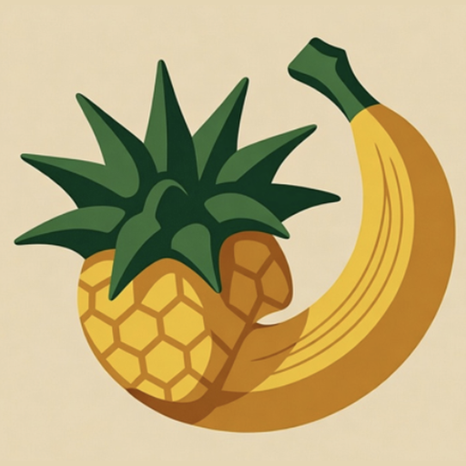

Chess-like tactics for iPhone, iPad and Android
Move your pieces on an 8×8 board and take the five power fields. Every capture is a real-time space battle: you fly the attacking ship, dodge shots and draw maneuvers with your finger. Play against the AI, with a friend on one device, or online.
Taktika jako šachy, kde je každé braní bitvou vesmírných lodí v reálném čase. Hraj proti AI, s kamarádem na jednom zařízení, nebo online.